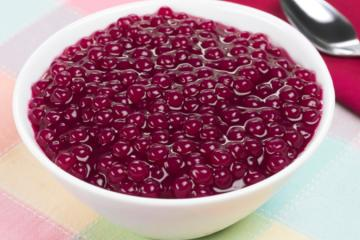

Wine Sagu recipe

Flavour text: How to make nifelheim tastiest Sagu
- Prep time: 5 min
- Cook time: 15~30 mins
- Additiona time: 1 hour
- Total time: ~2 hours
- Servings: 12
INGREDIENTS
- 2 cups of Sagu (usually brought from asian supermarket)
- 4 glasses of red wine
- 4 glasses of water
- Sugar at your heart's content
STEPS
- Put the Sagu in a pot with some water and leave it to soak for about 15 minutes;
- Drain the water from the sagu, bring it to stove and let it boil for about 10 to 15 minutes, stirring constantly;
- After these 15 minutes or as soon as some of the balls start to turn transparent;
- Pour the contents of the pot into a colander and rinse them to remove all the goo from the cooking process;
- While it's draining, add the 4 glasses of wine, sugar and the 4 glasses of water to the pan;
- When the mixture starts to boil, add the sagu and let it cook for another 15 minutes, until almost all of the balls are transparent;
- Place the contents inside a bowl and leave it to cool for about 1 hour;